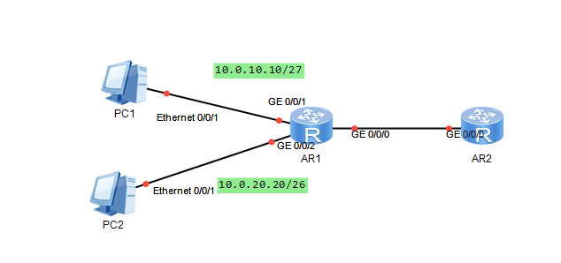

一、DHCP协议
DHCP 全称为动态主机配置协议（Dynamic Host Configuration Protocol)，这个协议定义了一个【服务器-客户端】模型，让DHCP客户端从网络中的DHCP服务器那里获得能够自行完成配置的信息，包括IP地址、默认网关、域名服务器和一些特定平台的信息。
1）DHCP的工作方式
- 步骤1：DHCP客户端在网络中寻找DHCP服务器
- 步骤2：DHCP服务器向DHCP客户端提供一个IP地址
- 步骤3：DHCP客户端向DHCP服务器申请该IP地址的使用权
- 步骤4：DHCP服务器向DHCP客户端确认它可以使用该IP地址
2）DHCP的配置
配置解释：
| 配置命令 |
解释 |
| dhcp enable |
使用系统试图命令为路由器开启DHCP功能 |
| dhcp select interface |
使用接口视图命令为指定路由器接口启用DHCP功能，并指定这个接口使用基于接口的地址池 |
| dhcp server lease {day [mintue]|unlimited} |
使用接口视图命令来修改IP地址的租期 |
| dhcp server excluded-ip-address [start-ip-address] [end-ip-address] |
使用接口视图命令在动态分配的IP地址范围中排除一些IP地址 |
| dhcp server static-bind ip-address [ip-address] mac-address [mac-address] |
使用接口视图命令为指定客户端固定分配一个IP地址，分配的IP地址。分配的IP地址必须在接口地址范围中，并且未被动态分配出去。 |
拓扑图：

实例配置
AR1的配置：
1
| ip adress 10.0.10.1 255.255.255.255.224
|
1
| ip address 10.0.20.1 255.255.255.192
|
1
| ip address dhcp-alloc #接口启用DHCP客户端功能
|
3）基于全局地址池的配置方式
- 步骤1：在路由器上启用DHCP功能
- 步骤2：创建地址池并可选地配置网关地址、租期、不参与分配的IP地址、固定分配的IP地址等信息
| 配置命令 |
解释 |
| ip pool [ip-pool-name] |
使用系统视图命令创建地址池，并进入地址池视图 |
| network [ip-address]{mask {mask-length}} |
使用地址池视图命令配置地址池中能够动态分配的IP地址范围 |
| gateway-list [ip-address] |
使用地址池视图命令指定一个网关IP地址 |
| lease [day {hour [minute]| unlimited}] |
使用地址池视图命令来修改IP地址的租期 |
| excluded-ip-address [start-ip-address] [end-ip-address] |
使用地址池命令在动态分配的IP地址范围中排除一些IP地址。 |
| static-bind ip-address [ip-address] [mac-address] |
使用地址池视图命令为指定客户端固定分配一个IP地址 |
| dhcp select global |
使用接口视图命令为指定路由器接口启用DHCP功能，并指定这个接口使用全局地址池 |
实例配置：
1
| network 10.0.10.0 mask 24
|
1
| excluded-ip-address 10.0.10.25 10.0.10.29
|
4)DHCP中继配置
拓扑图：

实例配置
AR1的配置：
1
| network 172.16.30.0 mask 24
|
1
| gateway-list 172.16.30.1
|
1
| network 172.16.40.0 mask 24
|
1
| gateway-list 172.16.40.1
|
AR2的配置：
1
| ip addresss 172.16.30.1 24
|
1
| dhcp relay server-ip 10.0.12.1
|
1
| ip addresss 172.16.40.1 24
|
1
| dhcp relay server-ip 10.0.12.1
|